잘린 시프트의 0 비교를 범위 비교로 바꾸기
설정된 비트가 trunc의 보존 범위 안에 있는지 직접 비교한다.
llvm-instcombine-issue-51889-report.pdf의 전체 내용입니다. 설명·코드·표·검증 기록을 생략하지 않고 옮겼습니다. 그림 안의 문자 인식 결과에는 기호 오류가 있을 수 있어 이미지도 함께 제공합니다.
이 문서의 목차
26. 7. 30. 오후 11:46 Closed Good First InstCombine 실습 기록 — #51889 / CLOSED GOOD FIRST INSTCOMBINE 분석 보고서 / icmp
26. 7. 30. 오후 11:46
Closed Good First InstCombine 실습 기록 — #51889
CLOSED GOOD FIRST INSTCOMBINE 분석 보고서
icmp-of-casted-shift missed fold
(llvm/llvm-project #51889)
작성 오수영
기간 2026-07-17 ~ 07-19 (분석), 07-28 (AArch64/성능 측정 보완)
1 선택한 이슈
2 핵심 패턴
3 Alive2 검증
4 Assembly 관찰
5 테스트 계획
6 패치 위치
7 merged patch
기준 LLVM trunk
페이지 배치·기호·도식 확인하기

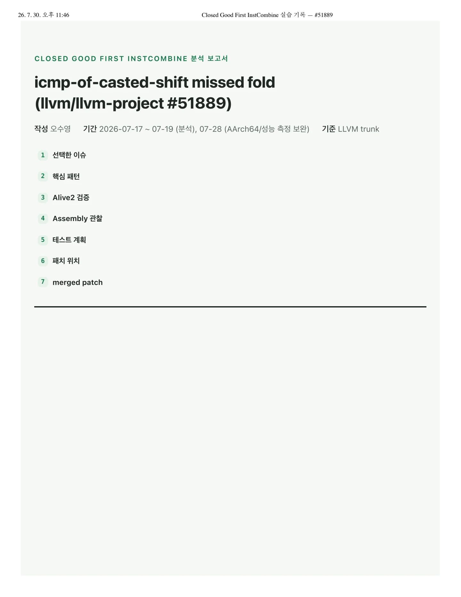
26. 7. 30. 오후 11:46 Closed Good First InstCombine 실습 기록 — #51889 / 선택한 이슈
26. 7. 30. 오후 11:46
1선택한 이슈
Closed Good First InstCombine 실습 기록 — #51889
요약
trunc(1 << a) == 0 비교를 InstCombine이 단순화하지 못한 missed-optimization. shl · trunc · icmp 3개 명령을 icmp ugt 1개로 축약 가능하다.
Issue
#51889 — [InstCombine] missed fold of icmp-of-casted-shift CLOSED · 2022-09 수정
Labels
good first issuellvm:instcombinebugzilla재현 후보
이슈 본문의 @src / @tgt IR 쌍(2절)을 최소 재현 대상으로 선정. 기존 회귀 테스트는
llvm/test/Transforms/InstCombine/icmp-trunc.ll .왜 이 이슈가 InstCombine 문제라고 판단했는가
타겟 독립적 단순화 — x86·AArch64 등 타겟과 무관하게 항상 성립 → 미들엔드(IR) 담당.
백엔드( llc )는 이 fold를 수행하지 않음(4절 실측) → 미들엔드에서 처리해야 함.
이 페이지에 연결된 자료
페이지 배치·기호·도식 확인하기

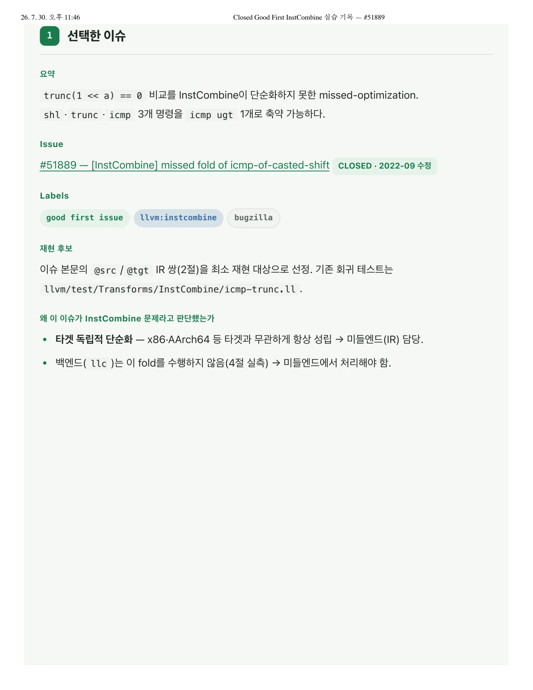
26. 7. 30. 오후 11:46 Closed Good First InstCombine 실습 기록 — #51889 / 핵심 패턴
26. 7. 30. 오후 11:46
2핵심 패턴
Closed Good First InstCombine 실습 기록 — #51889
원래 패턴 (src)
define i1 @src(i32 %a) {%shl = shl i32 1, %a%t = trunc i32 %shl to i8%r = icmp eq i8 %t, 0ret i1 %r}LLVM IR기대 패턴 (tgt)
define i1 @tgt(i32 %a) {%r = icmp ugt i32 %a, 7ret i1 %r}LLVM IR패턴 해석
1 << a 는 비트 a 만 1인 값, trunc 는 하위 8비트만 보존한다. 세 명령의 조합은 다음과 동치: 비트 a 가
하위 8비트 안에 있는가?
trunc 후 보존되는 하위 8비트
제거되는 상위 24비트
설정된 비트 (1 << a)
a = 3 — 비트가 하위 8비트 범위 내 위치
비트 번호 31 ......................... 8 7 ...... 0%shl (i32) 0000 0000 0000 0000 0000 0000 0000 1000보존 영역 = 8 ≠ 0 → false tgt: 3 u> 7 = false 일치
a = 9 — 비트가 하위 8비트 범위 밖으로 이동, 제거됨
비트 번호 31 ......................... 8 7 ...... 0%shl (i32) 0000 0000 0000 0000 0000 0010 0000 0000보존 영역 = 0 → true tgt: 9 u> 7 = true 일치
보존 범위는 비트 0~7. a ≤ 7 이면 trunc ≠ 0, a ≥ 8 이면 trunc = 0. 즉 trunc == 0 ⇔ a u> 7 — 세
명령이 비교 하나로 축약된다.
핵심 instruction
trunc 가 핵심이다. trunc 없는 icmp eq (shl 1, %a), 0 은 이미 false 로 접힌다 — 1 << a 는항상 32비트 중 한 비트만 켜진 값이라, 32비트 전체로 보면 절대 0이 될 수 없다는 사실을 known-bits 추론이
이미 알고 있기 때문이다.
페이지 배치·기호·도식 확인하기

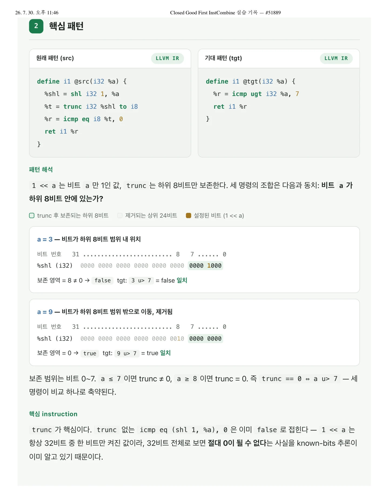
26. 7. 30. 오후 11:46 Closed Good First InstCombine 실습 기록 — #51889 / 그런데 가 끼면 질문이 바뀐다. "32비트 전체가 0이 아니다"는 사실이 있어
26. 7. 30. 오후 11:46 Closed Good First InstCombine 실습 기록 — #51889
그런데 trunc 가 끼면 질문이 바뀐다. "32비트 전체가 0이 아니다"는 사실이 있어도, "잘라낸 하위 8비트만 봤 을 때도 0이 아니다"는 별개의 질문이다. 켜진 비트가 하위 8비트 안( a≤7 )에 있으면 살아남고, 밖( a≥8 )에 있 으면 잘려서 0이 된다.
3 Alive2 검증
Alive2 링크
원본 alive2.llvm.org/ce/z/mmkPup · 실습 alive2.llvm.org/ce/z/VuDSpd
결과
실험 조작 결과
원 변환 | eq , 상수 0 | PASS |
|---|---|---|
경계 조건 | 상수 7 → 6 (반례 %a=7 ) | FAIL (예상됨) |
술어 치환 ugt → sgt PASS
안전 조건
shift amount ≥ 비트폭이면 shl 결과는 poison (LangRef).
poison은 임의 값으로 대체 가능(refinement) — a = 40 에서 src=poison, tgt=true도 안전.
Alive2는 "값이 항상 같은가"가 아니라 "tgt가 src의 refinement인가"를 검증.
페이지 배치·기호·도식 확인하기

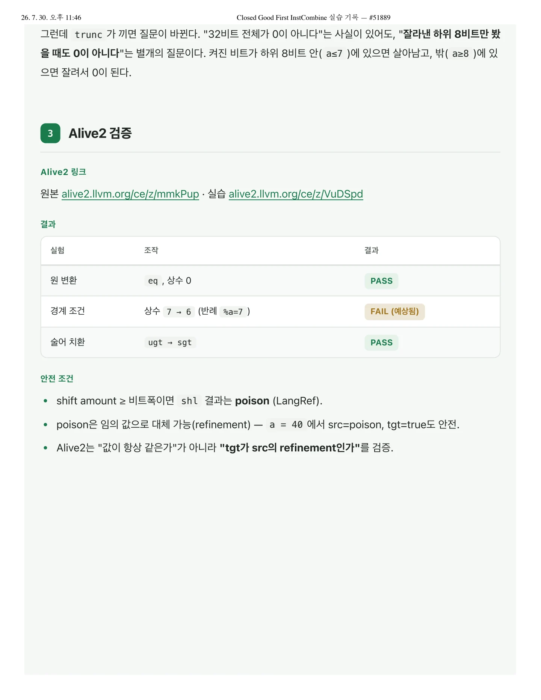
26. 7. 30. 오후 11:46 Closed Good First InstCombine 실습 기록 — #51889 / Compiler Explorer / assembly 관찰
26. 7. 30. 오후 11:46 Closed Good First InstCombine 실습 기록 — #51889
4Compiler Explorer / assembly 관찰
Compiler Explorer 링크 · Target
godbolt.org — LLVM IR 입력 → llc (trunk), -O2 · Target: x86-64. AArch64는 로컬 빌드
( build/bin/llc -mtriple=aarch64-unknown-linux-gnu )로 재현.관찰한 차이 (x86-64)
src 5 instructionsx86-64 ASMtgt 2 instructionsx86-64 ASMmov ecx, edi ; shift count → clmov eax, 1shl eax, cl ; variable shifttest al, al ; trunc → al readsete alretcmp edi, 8setae al ; a u>= 8ret5개 명령 → 2개. 가변 시프트( shl eax, cl )가 제거됨.
trunc 는 별도 명령 없이 al 서브레지스터를 읽는 것만으로 처리된다. IR 명령 수와 실제 기계 명령 수가
항상 같지는 않다는 예다.
llc 는 fold 없이 그대로 5개 명령으로 lowering → 백엔드는 이 단순화를 하지 않음.
관찰한 차이 (AArch64, 로컬 재현)
src 4 instructionsAArch64 ASMtgt 2 instructionsAArch64 ASMmov w8, #1lsl w8, w8, w0 ; variable shifttst w8, #0xff ; trunc → low-8 mask testcset w0, eqretcmp w0, #7cset w0, hi ; a u> 7retx86과 동일한 경향이 나타난다: 4개 명령 → 2개. trunc 는 tst w8, #0xff 한 명령으로 구현되며, fold를
적용하면 이 명령도 사라진다. 타겟이 바뀌어도 명령이 줄어드는 양상은 같다.
성능 측정 (llvm-mca, -mcpu=neoverse-v2 )
페이지 배치·기호·도식 확인하기

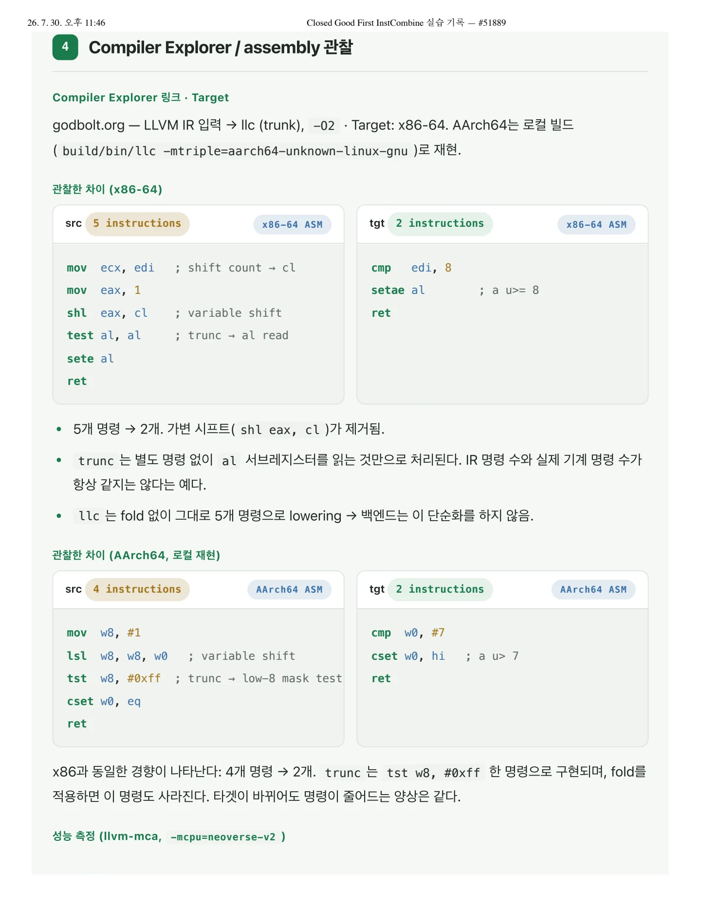
26. 7. 30. 오후 11:46 Closed Good First InstCombine 실습 기록 — #51889 / SRC (4 INSTRUCTIONS) TGT (2 INSTRUCTIONS) 변
26. 7. 30. 오후 11:46
uOps (ret 제외)
Block RThroughput (cycles/iter)
Closed Good First InstCombine 실습 기록 — #51889
SRC (4 INSTRUCTIONS)
TGT (2 INSTRUCTIONS)
4
0.80
2
0.50
변화
−50%
−37.5%
명령 수 감소와 함께 반복당 처리량도 0.80 → 0.50 cycle로 감소. lsl · tst 제거 효과가 수치로 확인된다.
로컬 opt로 fold 재현
opt -passes=instcombine 실행 결과 @src → @tgt 와 동일하게 단순화. 2·3절 결과와 일치한다.
페이지 배치·기호·도식 확인하기

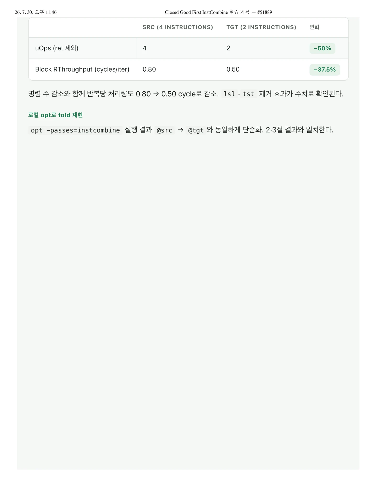
26. 7. 30. 오후 11:46 Closed Good First InstCombine 실습 기록 — #51889 / 테스트 계획
26. 7. 30. 오후 11:46
5테스트 계획
Closed Good First InstCombine 실습 기록 — #51889
테스트 파일 위치
llvm/test/Transforms/InstCombine/icmp-trunc.ll — lit + FileCheck. CHECK 라인은
update_test_checks.py 로 생성. 실제 merged patch(7절) 확인 후 특정재현용 최소 test.ll (RUN/CHECK)
icmp-trunc-repro.ll
LLVM IR; RUN: opt -passes=instcombine -S %s | FileCheck %sdefine i1 @src(i32 %a) {; CHECK-LABEL: @src(; CHECK-NEXT: [[R:%.*]] = icmp ugt i32 %a, 7; CHECK-NEXT: ret i1 [[R]]%shl = shl i32 1, %a%t = trunc i32 %shl to i8%r = icmp eq i8 %t, 0ret i1 %r}최소 테스트
eq / ne 스칼라 각 1개 — 검증된 두 술어에 대해 fold가 성립하는지 확인.
추가해야 할 predicate / edge case
케이스 확인 목적
벡터 | 스플랫·poison 원소 상수에서도 매처가 동작하는가 |
|---|---|
multi-use | %t 가 다른 곳에서도 사용될 때 fold가 여전히 이득인가 |
비표준 비트폭 | i37 , i9 — 8/32 하드코딩 가정이 없는가 |
비등호 술어
sgt 등은 미지원(TODO) — negative test로 유지
페이지 배치·기호·도식 확인하기

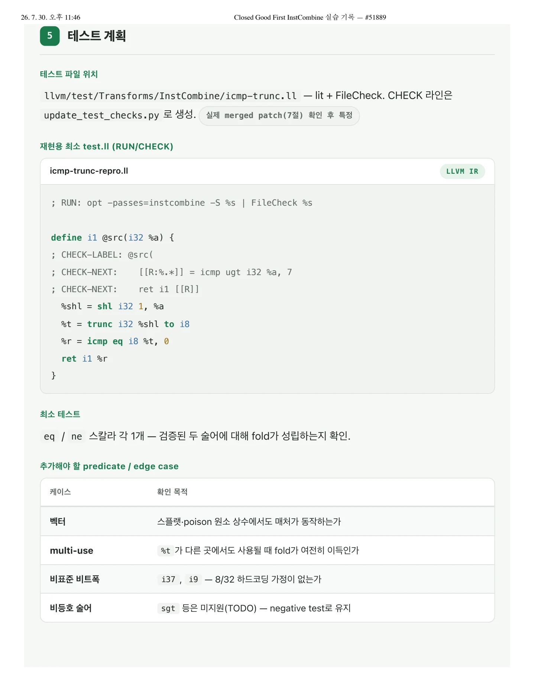
26. 7. 30. 오후 11:46 Closed Good First InstCombine 실습 기록 — #51889 / 패치 위치 추정
26. 7. 30. 오후 11:46
6패치 위치 추정
Closed Good First InstCombine 실습 기록 — #51889
문제 유형 매핑
문제 유형
담당 PASS
본 이슈
IR instruction 단순화 | | 해당 |
|---|---|---|
branch / phi / switch | | — |
vector IR 모양 | | — |
backend 직전 정리 | | — |
assembly 레벨 문제 Target backend —
구현 파일 후보
llvm/lib/Transforms/InstCombine/InstCombineCompares.cpp함수 후보
foldICmpTruncConstant() 가 대상 함수. 실제 커밋 확인 전, dispatch 경로를 추적해 도출했다.
visitICmpInst icmp instruction 방문
└─ foldICmpInstWithConstant 우변이 상수인 경우 모양별 분배 (:3585)
└─ dyn_cast<TruncInst> 분기 좌변이 trunc인 경우 (:3601)
└─ foldICmpTruncConstant ★ 패치 위치 (:1447)이 함수에 들어온 시점에는 이미 좌변이 trunc , 우변이 상수 C 임이 확정되어 있다. X 는 trunc 의 피연산
자( %shl )이므로, trunc 를 다시 확인할 필요 없이 X 만 매칭하면 된다.
사용할 수 있을 것 같은 PatternMatch
페이지 배치·기호·도식 확인하기

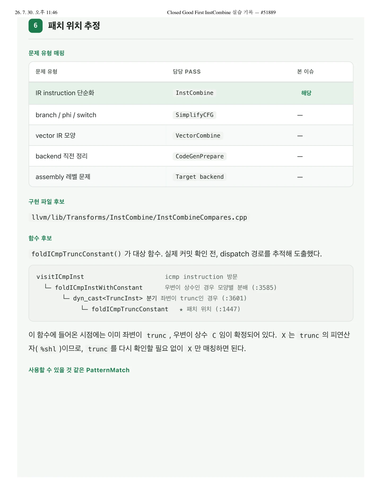
26. 7. 30. 오후 11:46 Closed Good First InstCombine 실습 기록 — #51889 / 설계한 fold / C++
26. 7. 30. 오후 11:46
설계한 fold
Closed Good First InstCombine 실습 기록 — #51889
C++Value *Y;if (Cmp.isEquality() && C.isZero() && match(X, m_Shl(m_One(), m_Value(Y)))) {auto NewPred = Pred == Cmp.ICMP_EQ ? Cmp.ICMP_UGE : Cmp.ICMP_ULT;return new ICmpInst(NewPred, Y, ConstantInt::get(SrcTy, DstBits));}// eq: (trunc (1 << Y) to iN) == 0 → Y u>= N// ne: (trunc (1 << Y) to iN) != 0 → Y u< N가드 조건( isEquality() , isZero() )은 3절의 Alive2 증명 범위와 일치한다. 범위를 벗어나면
miscompile 위험.
페이지 배치·기호·도식 확인하기

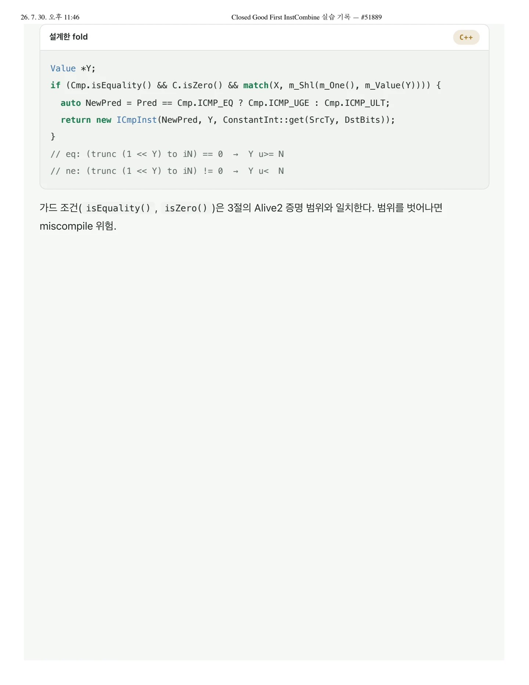
26. 7. 30. 오후 11:46 Closed Good First InstCombine 실습 기록 — #51889 / 실제 merged patch 학습
26. 7. 30. 오후 11:46
7실제 merged patch 학습
Closed Good First InstCombine 실습 기록 — #51889
실제 PR 링크
D115480 → commit d9e1f9d7591b (Sanjay Patel, 2022-09, 본체 12줄) · 후속 일반화 PR #169163
(2025-11, m_One() → m_Power2() )예상한 패치와 실제 패치의 차이
2022년 커밋 본체는 본 분석에서 설계한 내용과 실질적으로 같다. 가드 조건, 패턴 매칭, 반환 형태가 모두
일치한다.
현재 trunk는 m_One() → m_Power2() 로 일반화(PR #169163) — 임의의 2의 거듭제곱, 비교 상수까
지 확장.
TODO: Handle non-equality predicates 는 여전히 미해결 — 후속 기여 후보.분석 과정에서 확인한 개념
shift amount가 비트폭 이상인 경우의 정의 (→ poison 규정)
ugt 로 canonicalize되는 이유 및 sgt 치환 시에도 검증이 통과하는 이유
백엔드가 이 fold를 수행하지 않는 이유 (미들엔드/백엔드 책임 분리)
dispatch 경로 추적 방법, PatternMatch DSL의 동작 방식
새롭게 확인한 LLVM 개념
개념 정리
poison & refinement | 지연된 UB. 임의의 값으로 대체 가능. Alive2는 tgt가 src의 refinement인지 검증. |
|---|---|
canonicalization | 유효한 변환이 여럿일 때 채택하는 표준 형태. |
InstVisitor 구조 | visitXxx → 모양별 foldXxx 위임. 반환은 새 명령 또는 nullptr . |
PatternMatch DSL | |
APInt / dyn_cast | 임의 비트폭 상수 타입 / LLVM RTTI 기반 타입 검사. |
lit + FileCheck
RUN 으로 opt 실행, CHECK 로 대조. update_test_checks.py 로 자동 생성.페이지 배치·기호·도식 확인하기

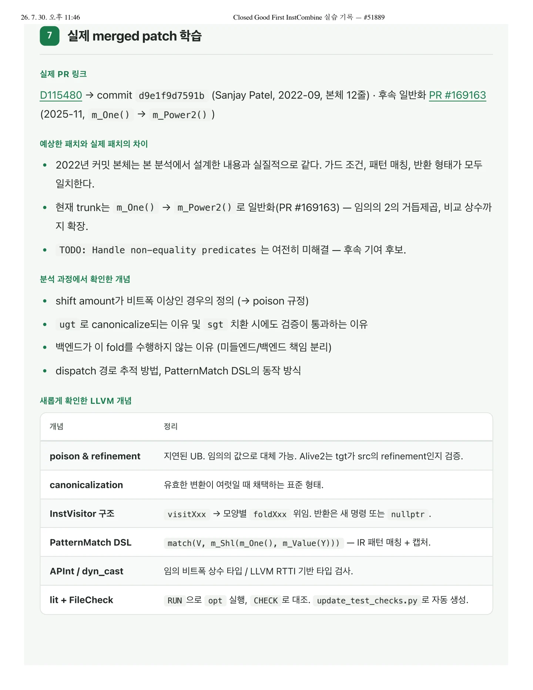
26. 7. 30. 오후 11:46 Closed Good First InstCombine 실습 기록 — #51889 / 분석 흐름: 이슈 선택 → 패턴 해석 → src/tgt IR 작성 → Aliv
26. 7. 30. 오후 11:46
Closed Good First InstCombine 실습 기록 — #51889
분석 흐름: 이슈 선택 → 패턴 해석 → src/tgt IR 작성 → Alive2 검증 → CE/성능 확인 → 테스트/패치 계획 → 실제 patch 학습
페이지 배치·기호·도식 확인하기

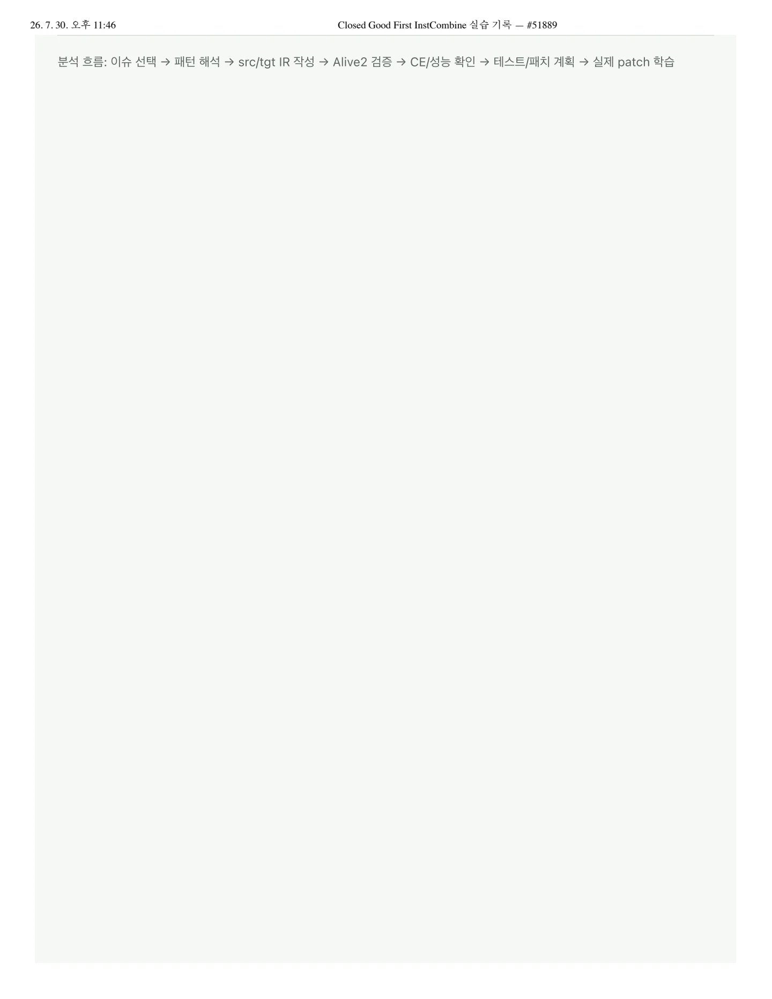
핵심 원리와 편집 주석
문제와 변환
; Before
%shl = shl i32 1, %a
%t = trunc i32 %shl to i8
%r = icmp eq i8 %t, 0
; After
%r = icmp ugt i32 %a, 71을 a칸 이동하면 bit a만 1이다. i8로 자르면 bit 0부터 7까지만 남는다. 따라서 정의된 시프트 범위에서 결과가 0인지 여부는 a가 7보다 큰지로 정해진다.
정확성의 조건
원래 i32 시프트의 범위를 벗어나는 입력은 poison을 만들 수 있다. 단순화의 의미를 일반적인 C 정수 시프트의 직관만으로 판단하면 안 된다.
- 시프트 폭과 trunc 뒤의 비트 폭을 함께 확인한다.
- 시프트 입력이 1인 패턴과 다른 값을 구분한다.
- 비교 predicate와 보존 범위의 경계값을 확인한다.
- vector와 추가 사용처가 있는 입력을 별도 테스트한다.
분석과 테스트
작성자는 이슈의 src·tgt를 최소 재현 입력으로 사용했다. Alive2로 의미를 확인하고, llc를 통해 타깃별 기계어 차이를 관찰했다.
패치 위치는 cast 뒤 비교를 처리하는 InstCombine 경로다. 새 규칙을 예상한 뒤 병합된 패치와 비교하는 순서로 분석했다.
관찰 결과의 범위
자료는 x86와 AArch64의 기계어 및 llvm-mca 결과를 제시한다. IR의 세 명령을 하나의 비교로 줄이는 것이 핵심이다.
문서 전문과 버전
- PDFPDF 원자료 · 11쪽llvm-instcombine-issue-51889-report.pdf
각 자료는 별도의 버전입니다. 같은 주제라도 구현 상태·설명 범위·수치가 다를 수 있습니다.
관련 이슈와 PR
구현·병합 상태와 측정값은 해당 제출 자료의 작성 시점 기준입니다.